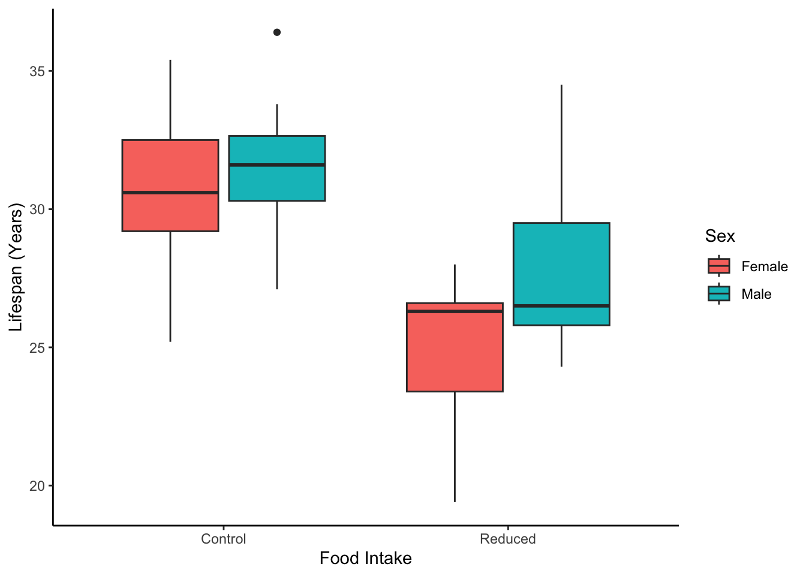

# if running for the first time, install
install.packages("tidyverse")
install.packages("curl")2 Modules 3 & 4: Describing data, Uncertainty, and Probability
3 Introduction
This is a markdown walkthrough of the problem sets for this week. Feel free to use it as a “follow along” for what is going on in the lectures! This particular document uses rmarkdown, which is a form of R in RStudio that allows you to create .pdf documents and print lines of code within the document itself.
3.1 Required Packages
We will use tidyverse to assist with data processing and plotting. We are also downloading curl to assist with data downloading. Please note, when you install packages, you will see the installation details. I am hiding these details within this document to make it easier to read and follow.
# load tidyverse
library(tidyverse)
library(curl)If you ever need to cite this package, you can find the information like so:
citation("tidyverse")
## To cite package ‘tidyverse’ in publications use:
# Wickham H, Averick M, Bryan J, Chang W, McGowan LD,
# François R, Grolemund G, Hayes A, Henry L, Hester J, Kuhn
# M, Pedersen TL, Miller E, Bache SM, Müller K, Ooms J,
# Robinson D, Seidel DP, Spinu V, Takahashi K, Vaughan D,
# Wilke C, Woo K, Yutani H (2019). “Welcome to the
# tidyverse.” _Journal of Open Source Software_, *4*(43),
# 1686. doi:10.21105/joss.01686
# https://doi.org/10.21105/joss.01686.
# NOTE: A Bibtex version will also print
# Not shown here4 Module 3 Problem Set
4.1 Learning Objectives
To continue gaining familiarity with the R statistical framework by using RStudio to:
- Calculate mean and standard deviation
- Calculate median, 25th and 75th percentiles, and interquartile range
- Install and activate package
ggplot2 - Use functions in
ggplot2to create boxplots, bar charts, scatterplots, and line graphs.
NOTE: ggplot2 is included within the tidyverse package installed at the beginning of this document.
4.2 Datasets
We will be working with two fictional datasets. These datasets are available on the Module 3 Problem Set Assignment page in Canvas. Dataset 2 is similar to that used in the Module 2 problem set, but not exactly the same, so be sure to use the correct dataset for this problemset.
These data can be downloaded as .csv files from the class dataset repository and imported locally or downloaded directly from the source as follows.
4.2.1 Dataset 1
In this study, researchers examined the effect of control versus reduced food intake (FoodIntake) on the longevity (LifeSpan.yr) of male and female (Sex) monkeys. These data are from Whitlock and Schluter (2015, 2nd Edition) problem 35, page 63.
Copy and paste the following code to import the Monkey dataset into your R session. Your output should look like the following.
Monkey <- curl("https://raw.githubusercontent.com/jacobccooper/biol827-statistics/main/datasets/module3_4-monkey_data.csv") %>%
read_csv()Rows: 44 Columns: 3
── Column specification ────────────────────────────────────────────────────────
Delimiter: ","
chr (2): Sex, FoodIntake
dbl (1): LifeSpan.yr
ℹ Use `spec()` to retrieve the full column specification for this data.
ℹ Specify the column types or set `show_col_types = FALSE` to quiet this message.And the data should appear as follows:
head(Monkey)# A tibble: 6 × 3
Sex FoodIntake LifeSpan.yr
<chr> <chr> <dbl>
1 Female Control 25.2
2 Female Control 29.6
3 Female Control 31.8
4 Female Control 33.2
5 Female Control 34.1
6 Female Control 28.64.2.2 Dataset 2
A researcher was conducting an exercise physiology study. The research team wanted to know whether volunteers of different sexes (Sex) differed in physical characteristics, especially Body Mass Index (BMI), over the first five weeks (Week) of the study and if there was a change in their oxygen consumption during exercise (V\(O_2\) max, measured as mm/kg body weight) over this time. For each volunteer, the research team recorded the initial weight (Weight.kg), height (Height.m), and V\(O_2\) max (VO2) of each participant. These data were randomly generated; any patterns are unintentional. We will name these data BMI in R.
BMI <- curl("https://raw.githubusercontent.com/jacobccooper/biol827-statistics/main/datasets/module3_4-physiology_data.csv") %>%
read_csv()Rows: 15 Columns: 6
── Column specification ────────────────────────────────────────────────────────
Delimiter: ","
chr (1): Sex
dbl (5): Participant, Week, Weight.kg, Height.m, VO2
ℹ Use `spec()` to retrieve the full column specification for this data.
ℹ Specify the column types or set `show_col_types = FALSE` to quiet this message.When you preview your data, they should look as follows:
head(BMI)# A tibble: 6 × 6
Participant Sex Week Weight.kg Height.m VO2
<dbl> <chr> <dbl> <dbl> <dbl> <dbl>
1 1 NonBinary 1 51.7 1.74 28
2 1 NonBinary 2 123. 1.75 37
3 1 NonBinary 3 104. 1.86 35
4 1 NonBinary 4 80.3 1.77 36
5 1 NonBinary 5 59.0 1.77 42
6 3 Female 1 73.9 1.84 254.3 Procedure
- Watch Module 3: Describing and Visualizing Data in R for a walk-through of these initial procedures. Note that this video may vary slightly from this particular document.
- Open a new R script in the source pane by clicking on the
File menu > New File > R Script. - If necessary, clear the environment and plots panes from R’s memory by clicking the broom icon at the top of both of these panes and clear the console by clicking on
Edit menu > Clear Console. - Set your working directory and import both datasets. Review Modules 1 and 2 procedures, if necessary, for a reminder of how to complete these tasks.
- For these procedures and video,
dataset 1refers to theMonkeydataset anddataset 2refers to theBMIdataset.
Descriptive statistics refers to simple calculations that summarize or describe a given variable. Measures of central tendency commonly used are the mean (i.e., average) and median (i.e, \(50^{th}\) percentile). Corresponding measures of spread are standard deviation (accompanying the mean) and interquartile range or \(25^{th}\) and \(75^{th}\) percentiles (accompanying the median).
4.3.1 Section A. Calculate mean and standard deviation
Use the
Monkeydataset (Data 1) to calculate the mean and standard deviation ofLifeSpan.yrvariable separately for eachFoodIntaketreatment (Control, Reduced) by hand using equations provided in the textbook. Afterwards, calculate these values using RStudio!To do this, subset the
Monkeydataframe using thesubsetfunction. Create one subset with data for individuals in the reduced food intake group and one for those in the control group.
- Be sure to give each subset a unique object name to use below.
- Review use of the
subsetfunction in previous problem sets, if needed.
Monkey.reduced <- subset(Monkey, FoodIntake == "Reduced")
Monkey.control <- subset(Monkey, FoodIntake == "Control")- Next, activate the package pastecs using the
librarycommand so you can use thestat.descfunction.
- Review instructions for activating a package in previous problem sets, if needed.
library(pastecs)
Attaching package: 'pastecs'The following objects are masked from 'package:dplyr':
first, lastThe following object is masked from 'package:tidyr':
extractYou can ignore the above warnings, but these refer to “conflicts” with same-named commands in different packages. We will not be using these commands in this module, but the issue can be circumvented by naming the package in the command (e.g., dplyr::first vs. pastecs::first).
- Run the function
stat.descon theLifeSpan.yrvariable for each subset (ControlandReduced) separately.
- If necessary, highlight the object name to print the output to the console pane.
stat.desc(Monkey.reduced$LifeSpan.yr) nbr.val nbr.null nbr.na min max range
22.0000000 0.0000000 0.0000000 19.4000000 34.5000000 15.1000000
sum median mean SE.mean CI.mean.0.95 var
578.8000000 26.3500000 26.3090909 0.6883983 1.4316026 10.4256277
std.dev coef.var
3.2288741 0.1227285 stat.desc(Monkey.control$LifeSpan.yr) nbr.val nbr.null nbr.na min max range
22.00000000 0.00000000 0.00000000 25.20000000 36.40000000 11.20000000
sum median mean SE.mean CI.mean.0.95 var
685.90000000 31.40000000 31.17727273 0.55906275 1.16263464 6.87612554
std.dev coef.var
2.62223674 0.08410732 Note that if so desired, we can also have R round all of these outputs to a specific value for us:
round(stat.desc(Monkey.control$LifeSpan.yr),2) nbr.val nbr.null nbr.na min max range
22.00 0.00 0.00 25.20 36.40 11.20
sum median mean SE.mean CI.mean.0.95 var
685.90 31.40 31.18 0.56 1.16 6.88
std.dev coef.var
2.62 0.08 - Compare the mean and standard deviation (
std.dev) for each food intake group to those you calculated by hand. They should be the same.
- Also, note the median is provided in this output.
4.3.2 Section B. Calculate median (50th), 25th and 75th percentiles, and interquartile range (IQR)
Quantiles are a way of looking at the response value at which a given percentage of observations are captured. The most common quantiles are the 25th, 50th, and 75th percentiles. This specific set of quantiles are also called quartiles: 1st quartile (25th percentile), median (50th percentile), and 3rd quartile (75th percentile). The interquartile range (IQR) measures spread representing the middle 50% of observations; that is, 25% of observations fall below the 25th percentile and 25% of observations are above the 75th percentile.
Calculate the median, first quartile, third quartile, and interquartile range separately for each
FoodIntakegroup (Control,Reduced) by hand using the information provided in the textbook and/or lecture material. Now, calculate it using RStudio.To do this, use the function
quantileseparately for eachFoodIntakegroup (Control,Reduced) using the following: object <- quantile(Dataframe$Variable) (Figure 2).
# generic format for quantile function
object <- quantile(dataframe$variable)- By default, the quantile function returns the following percentiles: 0%, 25%, 50%, 75%, 100%.
- Compare results for the 50% output from function quantile to the median calculated by hand and from
stat.descfor eachFoodIntakegroup. They should match.
An example for the control group is shown here:
control.quantiles <- quantile(Monkey.control$LifeSpan.yr)
print(control.quantiles) 0% 25% 50% 75% 100%
25.200 29.625 31.400 32.725 36.400 Calculate IQR in RStudio using function
IQRseparately for eachFoodIntakegroup (Control,Reduced) using the command:object <- IQR(Dataframe$Variable).Compare these values to those you computed by hand. They should be the same.
4.3.3 Section D. [Optional] Create histogram using function ggplot
There are multiple ways to graph data in R, to illustrate we can compare histograms produced using the hist function and ggplot in the ggplot2 package (and included within the already-loaded tidyverse package).
- For each
FoodIntakegroup (Reduced,Control), create a histogram using the functionhist.
Example histogram for Control:
hist(Monkey.control$LifeSpan.yr)- For each
FoodIntakegroup (Reduced,Control), create a histogram using the functionggplot.ggplothas the generic syntax:
Object <- ggplot(Dataframe, aes(x.variable, y.variable)) + geom_histogram()Where:
ggplot: identifies the dataframe and the aesthetics with theaes()attribute.aes(): goes within the ggplot function. Here, identify the variables to be associated with the x-axis and y-axis of any graph produced. Other attributes can also be specified here, but we’ll get to more on that later.geom_histogram(): this tellsggplotthat the type of graph to make is a histogram. You can specify the number of bins desired by using thebinsargument here, otherwise R with suggest a default number.
Example using the Control subset:
ggplot(data = Monkey.control, aes(x = LifeSpan.yr)) +
geom_histogram(bins = 10)
Highlight the command and click
Run. To view the graph in the plots panel, highlight or type the object name) and clickRun. You can also clickControl+Enter(Windows, Linux) orCommand+Enter(Mac) to automatically run the same line as the cursor.Compare the histograms created by the
histfunction to those fromggplot. They should look very different. This is because the default inggplotis to create histograms with 30 bins or the number of bins specified, while the number of bins in the graph created with thehistfunction is determined by an algorithm and on the nature of observations in the dataset.Change the number of bins in the
ggplothistogram by altering thebinsargument to values such asbins=5orbins=6inside the parentheses of thegeom_histogramfunction.
4.3.4 Section E. Create a boxplot using package ggplot2
- Create one boxplot that illustrates both
FoodIntakegroups (Reduced,Control) on the \(x\)-axis using functionggplot. The generic syntax is:
Object <- ggplot(Dataframe, aes(x.variable, y.variable)) +
geom_boxplot()ggplot: identifies the dataframe and the aesthetics with theaes()attributes. In this case, we will call the dataframeMonkeybecause it has data for bothControlandReducedfood intake groups.xlab,ylab,theme_classic: these are graphical parameters that change the axes labels and clean up the background, respectively. Try running the code with and without these parameters.
plot1 <- ggplot(Monkey, aes(x = FoodIntake, y = LifeSpan.yr)) +
geom_boxplot()
print(plot1)plot2 <- ggplot(Monkey, aes(x = FoodIntake, y = LifeSpan.yr)) +
geom_boxplot() +
xlab("Food Intake") +
ylab("Lifespan (Years)") +
theme_classic()
print(plot2)There are many other types of graphs that we will create in this class using R as well, including:
geom_histogram: creates a frequency histogram, only a \(y\) variable needs to be identified in theggplotportion of the command.geom_boxplot: creates a boxplot displaying the median (bold line), 1st and 3rd quartiles (box), 1.5 times the interquartile range (whiskers), and outliers (circles).geom_bar: creates a bar chart. if specified, the \(x\) variable should represent categories to be graphed separately.geom_point: creates an \(xy\) scatterplot. both \(x\) and \(y\) variables should have numeric data.geom_line: creates a line plot. typically, a time variable is represented on the \(x\)-axis.
Customization introduced this week:
- To create graphs with groupings, include a
group = GroupingVariableattribute after the \(y\) variable inaes()so it becomesaes(x, y, group= variable). - To have a different color represent each group, also add a
color = variableso it becomesaes(x, y, color = variable). To have the color fill the entire box, usefill = variable. - To change the axis labels, add
+ labs(x = NewXName, y = NewYName, title = "Graph title")after thegeom_histogramportion of the command. aes(): this goes within theggplotfunction. Here, identify the variables to be associated with the \(x\)-axis and \(y\)-axis of any graph produced.geom_boxplot: this tells ggplot that the type of graph to make is a standard boxplot.
- Run the command(s) to view the plot(s).
4.3.5 Section F. Clearly label axes
It is important to clearly label axes to indicate the variable(s) plotted avoiding abbreviations and acronyms as much as possible. Axes labels should always also indicate the unit of measurement that graphed values represent.
Add a title to the graph and change the appearance of the axis labels by adding a new layer to the graph created in Section E. Create a boxplot using package ggplot2. After
geom_boxplotand on the same line, add+.Go to a new line (click
enterorreturn), and add:labs(x = "x label (units)", y= "y label (units)", title= "Graph title")where the label and units for the \(x\) and \(y\) axes and graph title are typed within the quotation marks.
# example plot with colors and labels
ggplot(Monkey, aes(x = FoodIntake, y = LifeSpan.yr, fill = Sex)) +
geom_boxplot() +
labs(x = "Food Intake", y = "Lifespan (Years)") +
theme_classic()
4.3.6 Section G. Create a bar chart using package ggplot2
- Create one bar chart that illustrates the mean lifespan for each
FoodIntakegroup (Reduced,Control) on the \(x\)-axis using functionggplot. The generic syntax is:
Object <- ggplot(Dataframe, aes(x = x_variable, y = y_variable)) +
geom_bar(stat = "summary", fun = "mean")ggplot: identifies the dataframe and the aesthetics with theaes()attribute. In this case, we will call the dataframeMonkeybecause it has data for bothControlandReducedfood intake groups.aes(): this goes within the ggplot function. Here, identify the variables to be associated with the \(x\)-axis and \(y\)-axis of any graph produced. Other attributes can also be specified here, but we’ll get to that more later.geom_bar(stat = "summary", fun = "mean"): this tells ggplot that the type of graph to make is a bar chart and that the values to graph are mean life span calculated from summary statistics.
- Run the command(s) to view the plot(s).
Example:
ggplot(Monkey, aes(x = FoodIntake, y = LifeSpan.yr)) +
geom_bar(stat = "summary", fun = "mean")4.3.7 Section H. Create an XY scatterplot using package ggplot2
- Import the second dataset containing the
BMIproject data. See instructions in Dataset 2. - Create one scatterplot that illustrates the relationship between height on the x-axis and weight on the y-axis using function ggplot. The generic syntax is:
Object <- ggplot(Dataframe, aes(x = x_variable, y = y_variable)) +
geom_point()ggplot: identifies the dataframe and the aesthetics with theaes()attribute. In this case, we will call the dataframeBMIbecause it has data for both height and weight variables.aes(): this goes within the ggplot function. Here, identify the variables to be associated with the \(x\)-axis and \(y\)-axis of any graph produced.geom_point(): this tells ggplot that the type of graph to represent each set of height-weight observations as a point.
- Run the command(s) to view the plot(s).
ggplot(data = BMI, aes(x = Height.m, y = Weight.kg)) +
geom_point() +
labs(x = "Height (m)", y = "Weight (kg)") +
theme_minimal() # plot with only basic linesRemember, we can add in more parameters as well to make this more data-rich:
ggplot(data = BMI, aes(x = Height.m, y = Weight.kg, color = Sex)) +
geom_point(size = 5) + # adjust size
labs(x = "Height (m)", y = "Weight (kg)") +
theme_minimal() # plot with only basic lines4.3.8 Section I. Create a line graph using package ggplot2
- Create one line graph that illustrates changes in weight (on the \(y\)-axis) over time (on the \(x\)-axis) using function
ggplot. The generic syntax is:
Object <- ggplot(Dataframe, aes(x_variable, y_variable)) +
geom_line()ggplot: identifies the dataframe and the aesthetics with theaes()attribute. In this case, we will call the dataframeBMIbecause it has data for both height and weight variables.aes(): this goes within the ggplot function. Here, identify the variables to be associated with the \(x\)-axis and \(y\)-axis of any graph produced.geom_line: this tellsggplotthat the type of graph to represent each weight observation over time is with a continuous line.
- Add a title to the graph and change the appearance of the axes labels, we can add a new layer to the graph with:
+ labs(x = "New X label", y = "New Y label", title = "Graph title")after thegeom_linecall. - Run the command(s) and view the plot(s).
ggplot(BMI, aes(x = Height.m, y = Weight.kg)) +
geom_line() +
labs(x = "Height (m)", y = "Weight (kg)") +
theme_minimal() # plot with only basic lines- Notice that the resulting graph does not seem to make much sense. This is because in this case there were three observations for each time (one from a person of each sex category) and each individual observation is included on the graph.
4.3.9 Section J. Create a line graph using package ggplot2 with an individual line for each sex
- In this case, it would be more meaningful to have a separate line for each sex so we can better examine trends over time. To do this, modify the code from Section G. Create a bar chart using package ggplot2 or begin a new command in which a grouping variable is identified. The generic syntax is:
Object <- ggplot(Dataframe, aes(x_variable, y_variable, group = GroupingVariable)) +
geom_line()ggplot: identifies the dataframe and the aesthetics with theaes()attribute. In this case, we will call the dataframeBMIbecause it has data for both height and weight variables.aes(): this goes within the ggplot function. Here, identify the variables to be associated with the \(x\)-axis and \(y\)-axis of any graph produced.geom_line: this tellsggplotthat the type of graph to represent each weight observation over time is with a continuous line.
- Add a title to the graph and change the appearance of the axes labels, we can add a new layer to the graph with:
+ labs(x = "New X label", y = "New Y label", title = "Graph title")after thegeom_linecall. - Run the command(s) to view the plot(s).
ggplot(data = BMI, aes(x = Height.m, y = Weight.kg, group = Sex)) +
geom_line() +
labs(x = "Height (m)", y = "Weight (kg)") +
theme_minimal() # plot with only basic lines- It would be even more meaningful yet to have each line in a different color for each sex. To do this, modify the code from Section H. Create an XY scatterplot using package ggplot2 or begin a new command in which we tell R to vary colors by a particular variable. The generic syntax is:
Object <- ggplot(Dataframe, aes(x_variable, y_variable,
group = GroupingVariable,
color = GroupingVariable)) +
geom_line()ggplot: identifies the dataframe and the aesthetics with theaes()attribute. In this case, we will call the dataframeBMIbecause it has data for both height and weight variables.aes(): this goes within the ggplot function. Here, identify the variables to be associated with the \(x\)-axis and \(y\)-axis of any graph produced.geom_line: this tellsggplotthat the type of graph to represent each weight observation over time is with a continuous line.
- Run the command(s) to view the plot(s).
ggplot(BMI, aes(x = Height.m, y = Weight.kg,
group = Sex, color = Sex)) +
geom_line() +
labs(x = "Height (m)", y = "Weight (kg)") +
theme_minimal() # plot with only basic lines4.4 Problem Set 3 Assignment Directions and Questions:
- (4 points) Repeat procedures in Section A. Calculate mean and standard deviation and Section B. Calculate median (50th), 25th and 75th percentiles, and interquartile range (IQR) with the
Monkeydataset to determine the mean and standard deviation, as well as the median and interquartile range of life spans for each sex (ignoring the food intake variable).
- For full credit, round answers to the nearest 0.01. Hint: use the R function
round.
| Statistic | Nonbinary | Female | Male |
|---|---|---|---|
| Mean | |||
| Standard deviation | |||
| Median | |||
| Interquartile range |
(2 points) Use the
BMIdataset and packageggplot2to create a scatterplot with weight on the \(x\)-axis and V$O_{2}$ max on the \(y\)-axis (Section G. Create a bar chart using package ggplot2). Be sure axes are clearly labeled and include units of measure if applicable. You will be asked to insert or copy and paste image files or screenshots of your histograms in Canvas.(2 points) Use package
ggplot2to create a line graph with V$O_{2}$ max on the \(y\)-axis and Week on the \(x\)-axis (Section I. Create a line graph using package ggplot2). There should be one line for each sex and lines should be different colors. Be sure axes are clearly labeled and include units of measure if applicable. You will be asked to insert or copy and paste image files or screenshots of your histograms in Canvas.(BONUS +1 point possible) Putting together what you learned in Section F. Clearly label axes and Section I. Create a line graph using package ggplot2, create a bar chart from the
Monkeydataset in which sex is on the \(x\)-axis, average lifespan is on the \(y\)-axis, and bars are grouped and colored by food intake. What do you notice about the graph?(BONUS +1 point possible) In the code used for the previous question, change
colorin theaes()function tofill. Rerun theggplotfunction. What do you notice about how the graph changed vs. thecolorfunction?(BONUS +1 point possible) Run the code from the previous question, but first add
position = "dodge"to thegeom_barfunction. Be sure to use a comma,to separate it from other attributes. Be sure axes are clearly labeled and include units of measure if applicable. You will be asked to insert or copy and paste image files or screenshots in Canvas. How did the graph change this time?For the possibility of partial credit, compile your work in a single document and upload it in Canvas. Uploads as an
.rfile or an.rmdfile are preferred. Submitting your work for the Module 3 Problem Set Assignment: You do not need to answer any questions included in the procedures sections, those are for your self-reflection only. Questions in Canvas may be worded slightly differently than here, usually for brevity, but with the same meaning. If there is a discrepancy in what is being asked between this document and the question form in Canvas, answer based on what is asked in this document. Also, please let me know as soon as possible so I can get it fixed.
Submit your work on or before the due date indicated on the assignment page.